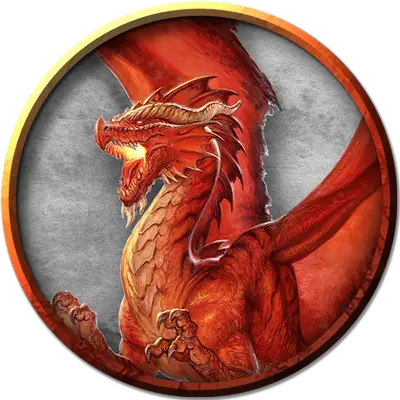

Аштиррантора
Ashtyrranthor
Огромный Дракон, хаотично-злой, именной НИП

Класс Доспеха 19 (природный доспех)
Хиты 256 (19к12 + 133)
Скорость 40 футов, летая 80 футов, лазая 40 футов
| мод | спас | ||
|---|---|---|---|
| СИЛ | 27 | +8 | +8 |
| ЛОВ | 10 | +0 | +6 |
| ТЕЛ | 25 | +7 | +13 |
| мод | спас | ||
|---|---|---|---|
| ИНТ | 16 | +3 | +3 |
| МДР | 13 | +1 | +7 |
| ХАР | 21 | +5 | +11 |
Навыки Восприятие +13, Скрытность +6
Иммунитет к урону огонь
Чувства слепое зрение 60 футов, тёмное зрение 120 футов, пассивное Восприятие 23
Языки Общий, Драконий
Опасность 17 (18000 опыта)
Бонус мастерства +6
Особенности
Легендарное сопротивление (3/день). Если Аштиррантора проваливает спасбросок, она может вместо этого сделать спасбросок успешным.
Врождённое колдовство. Базовой характеристикой Аштирранторы является Харизма. У неё подготовлены следующие заклинания, которые она может накладывать без использования материальных компонентов:
• 1/день каждое: сигнал тревоги [alarm], обнаружение магии [detect magic], газообразная форма [gaseous form], туманный шаг [misty step], создание прохода [passwall],
Действия
Мультиатака. Аштиррантора может использовать Ужасающее присутствие. Затем она совершает три атаки: одну укусом, и две когтями.
Укус. Рукопашная атака оружием: +14 к попаданию, досягаемость 10 футов, одна цель. Попадание: Колющий урон 19 (2к10 + 8) плюс урон огнём 7 (2к6).
Коготь. Рукопашная атака оружием: +14 к попаданию, досягаемость 5 футов, одна цель. Попадание: Рубящий урон 15 (2к6 + 8).
Хвост. Рукопашная атака оружием: +14 к попаданию, досягаемость 15 футов, одна цель. Попадание: Дробящий урон 17 (2к8 + 8).
Ужасающее присутствие. Все существа на выбор Аштирранторы, находящиеся в пределах 120 футов от неё и знающие о его присутствии, должны преуспеть в спасброске Мудрости Сл 19, иначе станут испуганными на 1 минуту. Существо может повторять этот спасбросок в конце каждого своего хода, оканчивая эффект на себе при успехе. Если спасбросок существа был успешным, или эффект на нём окончился, оно получает иммунитет к Ужасающему присутствию этого дракона на следующие 24 часа.
Огненное дыхание (перезарядка 5–6). Аштиррантора выдыхает огонь 60-футовым конусом. Все существа в этой области должны совершить спасбросок Ловкости Сл 21, получая урон огнём 63 (18к6) при провале, или половину этого урона при успехе.
Легендарные действия
Аштиррантора может совершить 3 легендарных действия, выбирая из представленных ниже вариантов. За один раз можно использовать только одно легендарное действие, и только в конце хода другого существа. Аштиррантора восстанавливает использованные легендарные действия в начале своего хода.
Обнаружение. Аштиррантора совершает проверку Мудрости (Восприятие).
Атака хвостом. Аштиррантора совершает атаку хвостом.
Атака крыльями (стоит 2 действия). Аштиррантора бьёт своими крыльями. Все существа в пределах 10 футов от дракона должны преуспеть в спасброске Ловкости Сл 22, иначе получат дробящий урон 15 (2к6 + 8) и будут сбиты с ног. После этого Аштиррантора может пролететь на расстояние, не превышающее половину скорости полёта.
Описание
Аштиррантора проводит большую часть своего времени на внешней поверхности астероида, рыская среди обломков межпланетных кораблей, давным-давно потерпевших крушение у Звездной Пристани. Когда в Приюте К'лиир начнется битва, существует 10% вероятность, что она услышит производимый при этом шум и немедленно отправится узнать что происходит, присоединяясь к сражению и используя заклинания газообразная форма [gaseous form], туманный шаг [misty step], создание прохода [passwall] для проникновения в труднодоступные места. Особо внимательно Аштиррантора присматривает за зонами 12f, 13 и 16a с внешней стороны астероида. Если она заметит здесь незваных гостей, то сразу же их атакует.